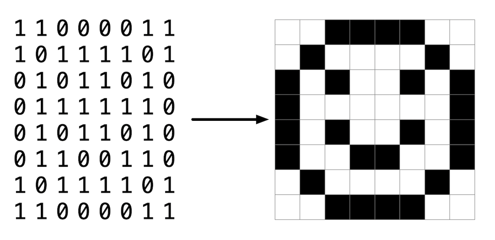

Lab 4: Smiley
Objetivos de Aprendizado
- Aprender como trabalhar com imagens
- Praticar a manipulação de pixels
Contexto

Você já viu um pouco na aula sobre como imagens são armazenadas em um computador. Neste laboratório, você irá praticar trabalhando com um arquivo BMP, na verdade a imagem de uma cara sorridente, como a mostrada aqui, e mudará todos os pixels pretos para uma cor de sua escolha.
No entanto, a imagem da cara sorridente com a qual você irá trabalhar não é feita apenas de 0's e 1's, ou pixels em preto e branco, mas consiste de 24 bits por pixel. Usa oito bits para representar valores vermelhos, oito bits para verde e oito bits para azul. Como cada cor usa oito bits ou um byte, podemos usar um número na faixa de 0 a 255 para representar o valor de sua cor. Em hexadecimal, isso é representado por 0x00 a 0xff. Misturando esses valores de vermelho, verde e azul, podemos criar milhões de cores possíveis.
Se você olhar para bmp.h, um dos arquivos de ajuda no código de distribuição, você verá como cada triple RGB é representado por uma struct como:
typedef struct
{
BYTE rgbtBlue;
BYTE rgbtGreen;
BYTE rgbtRed;
}
RGBTRIPLE; Objetivos de Aprendizado
onde BYTE é definido como um inteiro de 8 bits.
Você notará que vários arquivos são fornecidos no código de distribuição para lidar com a leitura e gravação de um arquivo de imagem, bem como para lidar com os metadados ou "headers" da imagem. Você estará completando a função colorize em helpers.c, que já possui como parâmetros de entrada a altura, largura da imagem e uma matriz bidimensional de RGBTRIPLE's que criam a própria imagem.
- Dicas
- Se salvássemos o primeiro pixel como
RGBTRIPLE pixel = image[0][0], poderíamos acessar cada uma das cores individuais depixelcomopixel.rgbtBlue,pixel.rgbtGreenepixel.rgbtRed.
- Se salvássemos o primeiro pixel como
Demo
Começando
Abra o VS Code.
Comece clicando dentro da janela do terminal e, em seguida, execute cd por si só. Você deve encontrar que seu "prompt" se
assemelha ao abaixo.
$Clique dentro dessa janela de terminal e execute
wget https://cdn.cs50.net/2022/fall/labs/4/smiley.zipdigite Enter para baixar um arquivo ZIP chamado smiley.zip em seu espaço de códigos. Tenha cuidado para
não ignorar o espaço entre wget e a URL seguinte, ou
qualquer outro caractere!
Agora execute
unzip smiley.zip
para criar uma pasta chamada sort. Você não precisa
mais do arquivo ZIP, então pode executar
rm smiley.zip e responda com "y" seguido de Enter no prompt para remover o arquivo ZIP que você baixou.
Agora digite
cd smiley
seguido de Enter para entrar (ou seja, abrir) nesse diretório. Seu prompt agora deve se parecer com o abaixo.
smiley/ $ Se tudo foi bem sucedido, você deve executar
ls e você deverá ver bmp.h, colorize.c, helpers.c, helpers.h, Makefile, e smiley.bmp.
Se você tiver algum problema, siga essas mesmas etapas novamente e veja se consegue determinar onde errou!
Detalhes da Implementação
Abra o arquivo helpers.c e observe que a função colorize está incompleta. Observe que a altura, largura e uma matriz bidimensional de pixels da imagem são definidas como parâmetros de entrada para esta função. Você deve implementar esta função para mudar todos os pixels pretos da imagem para uma cor de sua escolha.
Você pode compilar seu código digitando simplesmente make no prompt $.
Em seguida, execute o programa digitando:
./colorize smiley.bmp outfile.bmp
onde outfile.bmp é o nome do novo arquivo BMP que você está criando.
Para Pensar
- Como você acha que representa um pixel preto ao usar um arquivo BMP colorido de 24 bits?
- Isso é o mesmo ou diferente ao misturar tintas para representar várias cores?
Como Testar o Seu Código
Seu programa deve se comportar conforme os exemplos abaixo.
smiley/ $ ./colorize smiley.bmp smiley_out.bmp
Quando o seu programa estiver funcionando corretamente, você deverá ver um novo arquivo, smiley_out.bmp, no diretório smiley. Abra-o e veja se os pixels pretos agora são da cor que você especificou.
Você pode verificar o seu código usando o check50, um programa que o CS50 usará para testar o seu código quando você o enviar, digitando o seguinte no prompt $. Mas certifique-se de testá-lo também!
check50 cs50/labs/2023/x/smiley
Para avaliar se o estilo do seu código (indentação e espaçamento) está correto, digite o seguinte no prompt $.
style50 helpers.c
Como enviar
No seu terminal, execute o seguinte para enviar seu trabalho.
submit50 cs50/labs/2023/x/smileyQuer ver a solução da equipe?
#include "helpers.h"
void colorize(int height, int width, RGBTRIPLE image[height][width])
{
for (int i = 0; i < height; i++)
{
for (int j = 0; j < width; j++)
{
// Make black pixels turn red
if (image[i][j].rgbtRed == 0x00 && image[i][j].rgbtGreen == 0x00 && image[i][j].rgbtBlue == 0x00)
{
image[i][j].rgbtRed = 0xff;
}
}
}
}